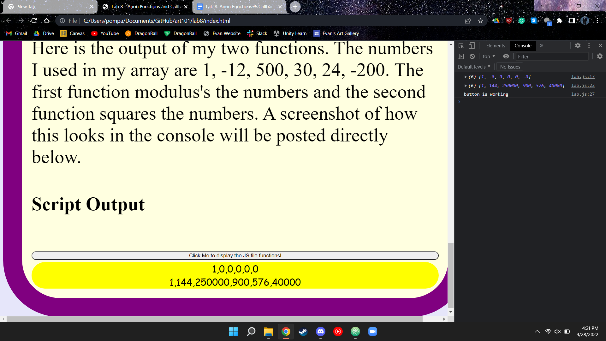

In this lab, we were tasked with creating a function and an anonymous function. Both functions had to manipulate an array of numbers in two different ways. Once these functions were created, we had to display our results to the console. Additionally, we could display our results within our webpage for extra points.
Me and my partner were confused as to how '.innerHTML' worked. We did not know that we had to use it inside of a 'main' function. Aside from this there were no other problems.
Here is the output of my two functions. The numbers I used in my array are 1, -12, 500, 30, 24, -200. The first function modulus's the numbers and the second function squares the numbers. A screenshot of how this looks in the console will be posted directly below.
